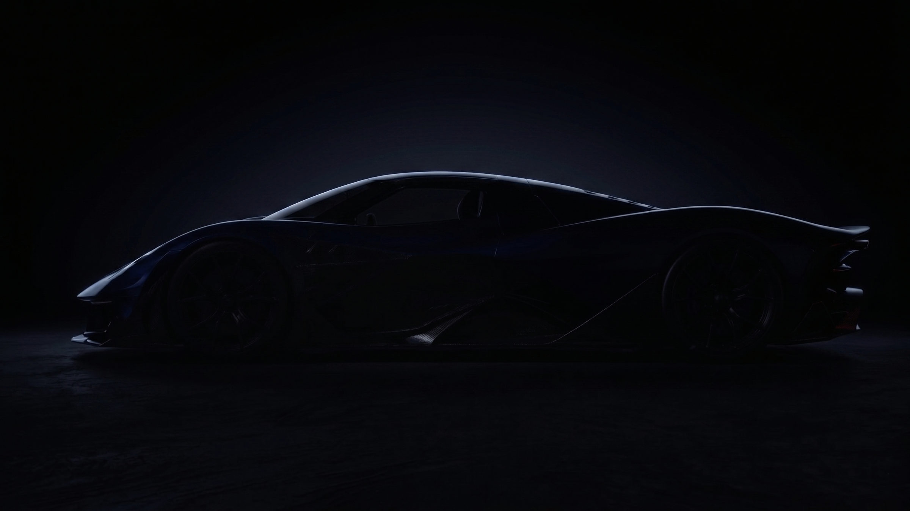
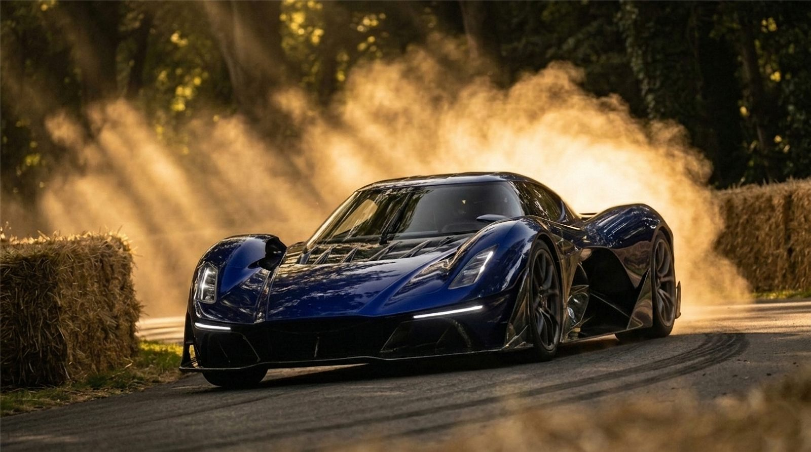
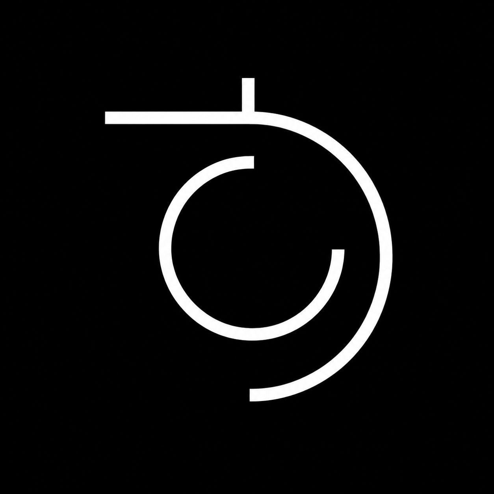
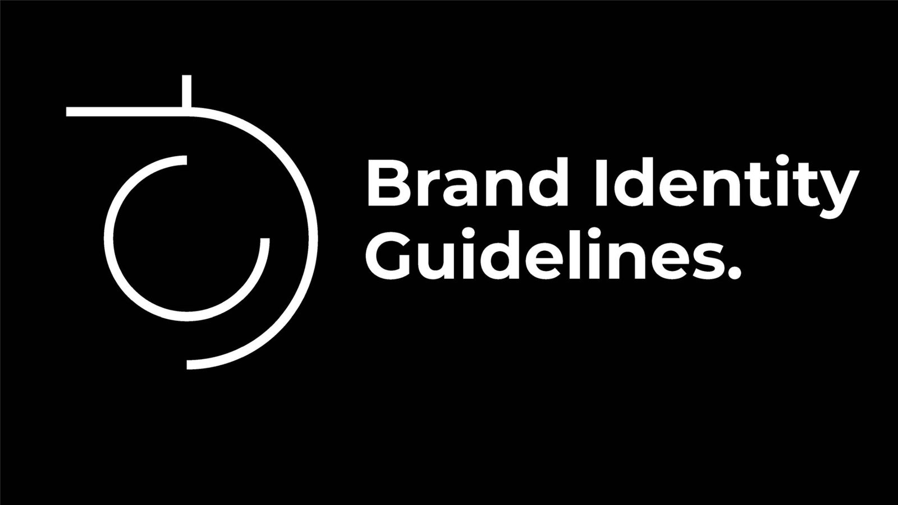
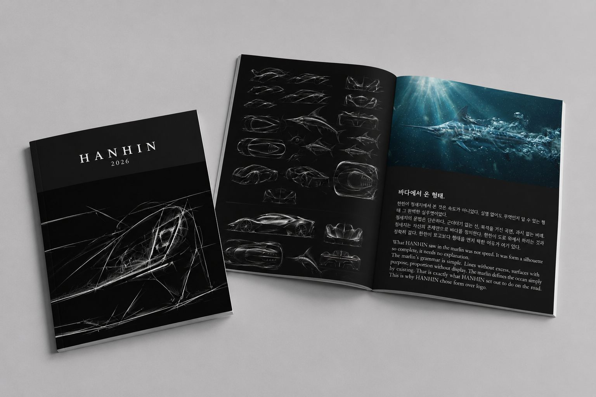

빛을 밀어 차체 라인을 따라가세요 · 키보드는 ← →
Scroll ↓
01 / 2026
Brand identity — 개인 작업
HANHIN
형태 그 자체로 말하는 것
- 문제
- 로고 없이 형태만으로 알아보는 브랜드를 만들 수 있을까
- 내 역할
- 개인 작업 · 기획부터 가이드라인까지 단독
- 핵심 결정
- 'ㅎ'에 전기 회로의 선을 결합한 로고, 청새치의 유선형에서 가져온 차체
- 결과
- 로고 · 브랜드북 · 브랜드 가이드라인




로고 없이 존재감만으로 시선을 끌 수 있는 브랜드를 만들어보고 싶다는 생각에서 시작한 프로젝트입니다.
브랜드 아이덴티티 설계부터 브랜드북, 브랜드 가이드라인 제작까지 전 과정을 혼자 기획하고 디자인했습니다. 브랜드명 '한힌'의 첫 자음 'ㅎ'에 전기 회로의 흐르는 선을 결합해 로고를 만들었고, 차량 형태는 가장 빠른 어종인 청새치의 유선형에서 가져와 AI로 비주얼을 구현했습니다.
이렇게 정리한 컨셉을 컬러, 타이포그래피, 적용 규정까지 포함한 브랜드 가이드라인으로 완성해, 브랜드 시스템까지 작업을 마무리했습니다.
연도2026
분류브랜드 아이덴티티
결과물로고 · 브랜드북 · 가이드라인
도구Gemini · GPT · Claude · Firefly · InDesign · Illustrator
역할개인 작업 · 전 과정 단독